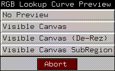
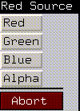

[N-World Contents] [Book Contents] [Prev] [Next] [Index]
Inks
In this chapter we'll introduce inks, one of the most powerful and flexible of N-Paints features. Think of inks as effects you apply to the canvas with tools and brushes. Inks can add or modify color, perform visual effects like blur, or perform filtering operations like despeckle. The key to N-Paint's flexibility is the ability to apply nearly any ink through nearly any brush or tool, providing you with complete control.
In this Chapter
In this chapter, we'll cover the following types of N-Paint inks:
Applying Inks in N-Paint
The ink used by either a brush or a shape can be a color, a generated pattern (such as a gradient), or a copy of an image. Some inks act as filters, modifying the images they are applied to.
Figure 6.1 shows the inks available for Shape operations, while Figure 6.2 shows the inks for Brush Operations.
Figure 6.1 The Inks menu for Shape Operations

Figure 6.2 The Inks menu for Brush Operations
The true power of N-Paint lies in your ability to apply any ink to the canvas through any shape or brush. The flexibility of this approach becomes apparent when you consider that you can combine the effects of multiple inks on the canvas. For example, you might use the rectangle tool for drawing a square of a particular color (using a Color ink) or to sharpen that same area (using a Filter ink).
Color Inks
Color inks apply a color (or colors) to the area defined by the shape you draw on the canvas.
Color
Lets you apply a single color to the canvas through the current shape.
Figure 6.3 Color ink parameters for shape tools
Color Ink Parameters for Brushes
When the current tool is a brush, several additional color ink parameters are available.
Figure 6.4 Color ink parameters for brushes
Smear
If the current tool is a brush, the smear toggle appears in the color ink parameters menu.
Gradient 2
Generates a gradient between two colors in the drawn shape, like the black and white gradient show in Figure 6.5
Figure 6.5 A black and white gradient
Figure 6.6 Gradient 2 ink parameters
The four symbols at the top of the Gradient 2 parameters menu determine the orientation of the gradient.
Gradient 4
Generates a gradient between four colors. You specify the four corner colors, which should be assigned in the menu in their respective positions.
Figure 6.7 Gradient 4 ink parameters
Multi Grad
Generates a color gradient that interpolates between a maximum of 12 colors. The options for this gradient are similar to Grad 2.
Figure 6.8 Multi Grad ink parameters
You may specify any of the four types of gradients described for Grad 2.
Recolor Inks
Recolor inks allow you to systematically modify pixel colors.
IHS Recolor
Recolors the image based on its intensity, hue, and/or saturation components. Ink parameters control which components of the image you want to modify.
Figure 6.9 Recolor brush parameters (with IHS Recolor ink selected)
After you select the component(s) you want to change, specify how you want to change them:
RGB Recolor
Similar to the IHS Recolor ink described above, but works on the RGB color model.
Figure 6.10 Recolor brush parameters (with RGB Recolor ink selected)
- Note. For the RGB recolor brush to affect the alpha channel, the matte must be turned on using either Add or All.
Figure 6.11 The Curve Edit button

Figure 6.12 Select the portion of the canvas to base the curve modification on
- Specify the part of the image you want to use to modify the RGB curves for the image, then (CLICK-L) on Edit. You get a pop-up menu that asks how you want to preview your changes (before applying them to the image):
After you select what type of preview you want, the curve editor appears over the canvas. It looks something like this:
Figure 6.13 RGB recolor curve editor (linear mode)
You control the shape of the curve by placing control points, called "knots", on the curves. Then you can use the mouse to move the knots and change the shape of the curve.
The shape of the curve itself is determined by the two mode toggles at the bottom of the Curve Editor.
Figure 6.14 RGB recolor curve editor; left, linear mode;right, spline modes
Equalize
Often, a scanned or frame-grabbed image uses only a fraction of the available colors. You can use the Equalize ink to use all available colors to enhance contrast for such an image.
Figure 6.15 Equalize parameters
Typically, you'll want to compute the boundary values for this operation as a preliminary step. Calculating boundaries generates a histogram showing the low and high intensity values for either the entire canvas or the selected area are automatically put in the low and high values.as, or a selected region of the canvas.
To do so:
1. (CLICK-L) on Compute Bounds
- The Compute Bounds pop-up menu appears:
Figure 6.16 Compute Bounds pop-up menu
Once these values have been computed, they are displayed in the Low and High edit fields.
Posterize
The Posterize ink lets you recolor a continuous-tone image so that it uses fewer colors, producing posterization, or "banding" effects. This pseudocolor look is similar to that generated by frame buffers that only allow a limited number of colors.
Figure 6.17 Posterize recolor parameters
Colorize
This brush recolors the canvas using a color map.
Figure 6.18 Colorize greyscale parameters
Source
The source parameter controls which component of the picture is fed into the color map. To select a source, (CLICK-L) on the Source edit field. The source pop-up menu appears.
Figure 6.19 The Source pop-up menu
Add Noise
Introduces a level of "noise" into the image, producing a grainy effect.
Figure 6.20 Add Noise ink parameters
Swap RGBA
The Swap RGBA brush lets you swap the values of components in an image. This is particularly useful, for example, if you want to copy the red, green, or blue channel to or from the alpha channel (the matte), or if you have imported an image from another system whose channels are swapped. For each channel, you can specify the source from which the new value should be taken:
Figure 6.21 Swapping channels
- Red gets copies the value of the R, G, B, or A channel into the red component of the image.
- Green gets copies the value of the R, G, B, or A channel into the green component of the image.
- Blue gets copies the value of the R, G, B, or A channel into the blue component of the image.
- Alpha gets copies the value of the R, G, B, or A channel into the alpha component of the image.
To copy the components of one channel into another channel, (CLICK-L) on the channel you want to copy into (the target channel). The Source pop-up menu for that channel appears (the Red source pop-up, in Figure 6.22).

Figure 6.22 The Swap RGBA Red Source pop-up menu
(CLICK-L) on a source channel to select it.
Filter Inks
FIlter inks don't add color to the canvas. Instead, they modify images based on certain rules. For example, you can increase or decrease the resolution of an image, shrink areas of the canvas, etc.
Blur
Diffuses or "blurs" the area inside the shape.
Figure 6.23 Blur ink parameters
Sharpen
Sharpens the image.

Figure 6.24 Sharpen ink parameters
Use the slider to adjust the sharpen filter factor. A greater number produces a sharper image.
Shrink
Affects the intensity component of the area under the shape.
Figure 6.25 Shrink ink parameters
For the area under the shape, the value of every pixel is set to its darkest neighboring pixel; the effect is particularly visible if you turn Accumulate on, which tends to create a mosaic type of effect. (You could use this ink to clean dirt specks from an image that had a higher intensity than the rest of the image.)
Expand
As with the Shrink filter, this ink affects the intensity component of the image.
Figure 6.26 Expand ink parameters
For the area under the shape, the value of every pixel is set to its lightest neighboring pixel; the effect is particularly visible if you turn Accumulate on, which tends to create a mosaic type of effect. (You could use this ink to clean dirt specks from an image that had a lower intensity than the rest of the image.)
Despeckle
This is a noise filter, useful for removing specks or other random noise from an image. Noise is eliminated by changing the value of the "offending" pixel to a value based on the median value of surrounding pixels.
Figure 6.27 Despeckle ink parameters
Mosaic
Pixelates the area under the shape; the new "cell" size is determined by the x and y values specified. The effect is to reduce the resolution of the image.
Figure 6.28 Mosaic ink parameters
Fields
Figure 6.29 Fields ink parameters
This ink allows you to duplicate the odd or even fields in a video image. To select the field to be duplicated, (CLICK-L) on the field parameter. The Set Field pop-up menu appears.
Figure 6.30 The Set Field pop-up menu
(CLICK-L) on Odd Field or Even Field
Scatter
Scatter causes a streaking or scattering effect, depending on whether one or both parameters are used.
Distort
available only with shape tools
Figure 6.31 Distort ink parameters (scatter mode)
The Distort ink allows you to distort an image using another image as a map for the distortion.
In mapped mode, a distortion map is used to generate the distortion in the image. A distortion map is a 64-bit image that specifies a pixel-by-pixel distortion by encoding that information in its red and green channels. The horizontal distortion is determined by the red channel, the vertical distortion by the green channel.
An identity map is a map that, when applied to the image, has no effect on the image. The identity map is always the same. Typically, the identity map is used as the base map when you distort an image. The offset map (called the "map" in the Distort ink parameters) is the map that you create.
In both the base and offset distortion maps, each pixel has a unique opacity value, which means that each pixel in the map corresponds to a specific pixel in the image. By comparing the unique opacity value for each pixel in the base map and looking up its equivalent in the offset map when applying the ink, N-Paint knows how much to warp the image. You can further define the amount of warp created when applying the Distort ink by using the Amount parameter as described in the brief tutorial below.
To create an offset map, you use tools like the smear ink or a shape tool with a pixel mover ink, which move the pixels in the map around, rather than change their color.
- Note. You can modify the offset map using brushes that make pixel values non-unique in the map-the results of using such an offset map depend on how you change the map, and can only really be determined on an operation by operation basis.
Pixels at one side of the horizontal component of the identity map are red at 100% opacity. The map falls off horizontally from right to left, until pixels at the opposite side have 0% opacity. Vertical maps are generated in a similar manner, except in the green channel, and with dropoff occurring from bottom to top. When laid over each other, the result is a gradient with light green in one corner and dark red in the opposite corner.
The steps below show an example of how to create a custom distortion map and apply it using the Distort ink through a rectangle shape:
1. Load the image you want to distort.
- In order to build a distortion map, you'll need to work with another image.
2. (CLICK-L) on Canvas Mode Menus icon.
3. (CLICK-L) on the Distortion button
- The following menu appears.
Figure 6.32 Distortion operations
4. Select Make Image with Identity Map.
- This creates a base identity map which can be used when applying the ink, as described below. The map is named identity-width-height by default, where width and height are the dimensions of the image.
5. (CLICK-L) on the Distortion button again.
6. (CLICK-L) on Enter Interactive Distortion Mode.
- The Distortion button turns yellow when you are in Interactive Distortion mode, and stays so until you exit.
7. Select the Round brush with a smear ink.
- Smear the canvas. Notice that the blending that normally occurs with a smear brush does not occur when distorting; you are actually moving the pixels on the distortion map and seeing those changes reflected back in the current image.
8. (CLICK-L) on Distortion again.
9. (CLICK-L) on Save Distortion Map to Memory.
- When prompted for a name, give it a name such as dist-map.
10. (CLICK-L) on Distortion again.
11. (CLICK-L) on Exit Interactive Distortion Mode.
12. When prompted, choose one of the following:
13. Choose the Quad Tool.
14. Choose the Distort ink.
Figure 6.33 Distort ink parameters (mapped mode)
15. For Map, enter the name of the smeared map you saved in step 7.
- If you used the example above, it is face-stretch.
16. For Base, specify the identity map you saved in step 3.
- The default name is identity-width-height.
17. (CLICK-L) on Amount, and enter a value of 0.2.
18. (CLICK-L) on Do Full Canvas.
- Note that the image is partially distorted with respect to the maximum distortion you saw in Interactive Distortion mode.
19. (CLICK-L) on Amount, and enter a value of 0.5.
20. (CLICK-L) on Do Full Canvas.
- The image is distorted even more; since the amount of influence can be controlled numerically, this operation is ideal for controlling through N-Paint's scripting capabilities.
- Note. The application of the Distort ink is a computationally intensive operation-use Do Full Canvas only if you really want to do so. You can save time by applying the ink through a shape so that it affects only a selected area of the image.
Composite Inks
Composite inks are designed to allow you to place one image into or onto another image.
Reveal Image
Figure 6.34 Copy ink parameters
The reveal image ink lets you copy pixels from another part of the image (or from a different image) into the area specified by the shape operation.
Figure 6.35 Copy ink operations (also available for Scale and Warp inks)
Scale Image
Copies the specified image into the specified shape. Typically, you'll load a blank canvas, then load the image to be scaled into memory.

Figure 6.36 Scale Image ink parameters
If the shape you are copying into is not rectangular (e.g., a polygon), the image is copied into a bounding box described by the polygon and only the portion of the image described by the polygon itself is displayed.
Figure 6.37 Scale image ink
Figure 6.38 Scale Image ink operations
Warp Image
Use this ink to copy any image in memory into the specified shape by stretching its edges to match the four corners of the rectangle. This works on rectangles. For other shapes, its effect is the same as Scale Image.
Figure 6.39 Warp ink parameters
Note that the warped image is copied into the bounding box described by the selected shape, as described in the section "Scale Image," on page 6-22.
Create Matte Inks
You can paint into the matte channel with a color ink when the matte is in Add or All mode. However, you can use Create Matte inks to pull mattes systematically based on the colors in an image.
Chroma Key
The Chroma Key ink can be used to build a matte based on either RGB or IHS components of an image. It can be used to build a matte that will let you protect a part (or parts) of an image of a particular color or brightness.
Building a matte involves two major steps: defining the parameters for the matte, and actually pulling the matte.
To understand how mattes are built using a chroma key, follow the steps below:
1. Select the rectangle tool.
2. Select the Gradient 2 ink.
3. (CLICK-L) on Do Full Canvas.
- This creates a gradient
4. Select the Chroma Key ink.
Figure 6.40 Chroma key ink parameters for the IHS model
5. (CLICK-L) on the Edit button to define the parameters for the matte.
- The following dialog box appears:
Figure 6.41 Areas from which to build a chroma key
6. After you select an area from which to build the key, the Tools menu disappears and the chroma key edit menu appears:
Figure 6.42 Chroma key edit menu
7. (CLICK-L) on the Color box.
- This is the "seed" color for the chroma key, a place from which the chroma key is started.
8. Move the cursor over the image and (CLICK-L) on a part of the image contained in the area that you want to mask.
- All pixels of that value are shaded the color of the matte.
9. (CLICK-L) on another part of the same image to extend the range.
- For example, if you created a blue to yellow gradient, (CLICK-L) toward the yellow end of the gradient. All pixels with a pixel value between the two pixels are now selected. You can continue extending the range of pixels selected by clicking on additional pixels in the image. Continue until almost all of the area you want is selected.
10. Use the Hue and Saturation sliders to extend the selection of pixels to include in the mask based on those components.
- The area highlighted in pink is the selected area; you can modify these sliders by grabbing the small black or white boxes in the bar.
11. Use the Extra slider to extend the selection of pixels to include in the mask.
12. Use the Soft slider to create a soft edge on the edges of the matte.
- The range of pixels contained in the matte is extended; however, as the pixel values get further from the original pixels selected, the opacity of the matte is reduced.
- Note. The matte shown is a preview only. It shows what the matte would look like if created using the currently selected parameters. To create the matte, continue on with the steps below.
13. (CLICK-L) on Exit to return to tools mode.
To actually pull the matte, continue with the steps below:
14. Make sure the matte is in Add, Open, or All mode.
15. Select the area for which you want to create the matte.
- If you want to create a matte for the whole image, select the rectangle, then select Do Full Canvas.
The matte should appear just as it did while you were in the chroma key edit mode, and can now be saved or used just like any other matte you create.
Edge Key
The Edge Key ink creates a key at high contrast (edges) of an image; to fill in that portion of the matte not selected by the Edge Key ink, you can use the fill tool (carefully).
Figure 6.43 Edge key ink parameters
Move Pixels Inks
Move pixels inks don't add colors. Use Move Pixels inks to move portions of an image to different parts of the image.
Shift
Shifts the pixels under the shape the amount specified.
Figure 6.44 Shift ink parameters
Flip
Flips the area under the shape in the specified direction.
Figure 6.45 Flip ink parameters
Mirror
Creates a mirror image of the canvas by dividing it and mirroring it in the direction(s) specified.

Figure 6.46 Mirror ink parameters
Figure 6.47 Mirror ink samples
Magnify
Magnifies the area under the current shape using the specified scale.
Figure 6.48 Magnify ink parameters
Special Inks
Special Inks perform operations that don't fall neatly into any of the other categories.
Emboss
Creates a drop shadow and highlight around the defined shape, leaving the area inside the shape alone.
Figure 6.49 Emboss ink parameters
The emboss ink can be used in one of two modes:
For either mode, you can specify the following parameters:
Figure 6.50 Specifying an angle for emboss ink
There are two illuminated areas for an embossed area; the highlight (the side being hit by the light) and the shadow (the side away from the light), as shown in Figure 6.51:
Figure 6.51 Highlight and shadow areas of an embossed area
Brush Inks
These inks can only be used with brushes.
Pattern
Figure 6.52 Pattern Ink parameters menu
You can use the pattern ink to "pickup" an image from a section of the canvas, and then use that pattern as a brush shape to paint on the canvas. To pickup an image, place the brush over the area you want to pickup and (CLICK-L).
Smear

Figure 6.53 Smear Ink parameters
Use the smear ink to "smear" pixels under the brush, as if you were fingerpainting directly onto the canvas.
Vapor
Figure 6.54 Vapor Ink Parameters
The vapor ink spreads or condenses area of the picture under the brush shape, depending on the scale set.
Figure 6.55 Pixel behavior with the vapor brush
- To see the effect, create a large brush, then (CLICK-L) and hold over an area using a scale above one and then below one.
Reveal
Figure 6.56 Reveal Ink Parameters
The reveal brush affects the canvas by copying from an image loaded in memory (or the backup canvas) to the canvas. The effect is such that you appear to be brushing away the paint on the current canvas and revealing the saved image "underneath."
If the background image (the one being revealed) is smaller than the canvas image, the image is revealed in a tiled fashion.
Figure 6.57 Select Brush Image pop-up menu
1. Move the pointer over the canvas.
- The cursor changes into a line tool.
2. (CLICK-L) once to select the base point.
3. Move the cursor and (CLICK-L) again to set the offset.
- The X and Y values are updated automatically.
[N-World Contents] [Book Contents] [Prev] [Next] [Index]
 Another fine product from Nichimen documentation!
Another fine product from Nichimen documentation!
Copyright © 1996, Nichimen Graphics Corporation. All rights
reserved.